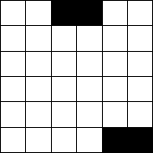
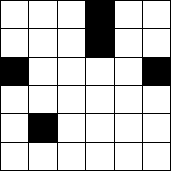
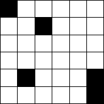

1-3. Full House
Find the starting square and draw a path moving horizontally and vertically that passes through each square exactly once. For each straight segment in the path, you must go as far as possible, changing direction only when you are blocked by the grid's edge, a black square, or a square already visited.
|  |  |  |
4. Number Boxes
Put the digits 1-9 in the circles so that the sum of the numbers in each rectangle is the same.
Click here for the answers.
Click here to go back to the Puzzle Palace.